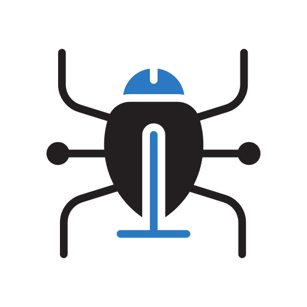

tema3-2a

¿Que es "PENTESTING"?Una prueba de penetración, o "pentest", es un ataque a un sistema
informático con la
intención de encontrar las debilidades de seguridad y todo lo que podría tener acceso a ella, su
funcionalidad y datos.Pentesting básicoA continuación se expondrán algunos mecanismos para la rrealización
de
"PENTESTING" básico.